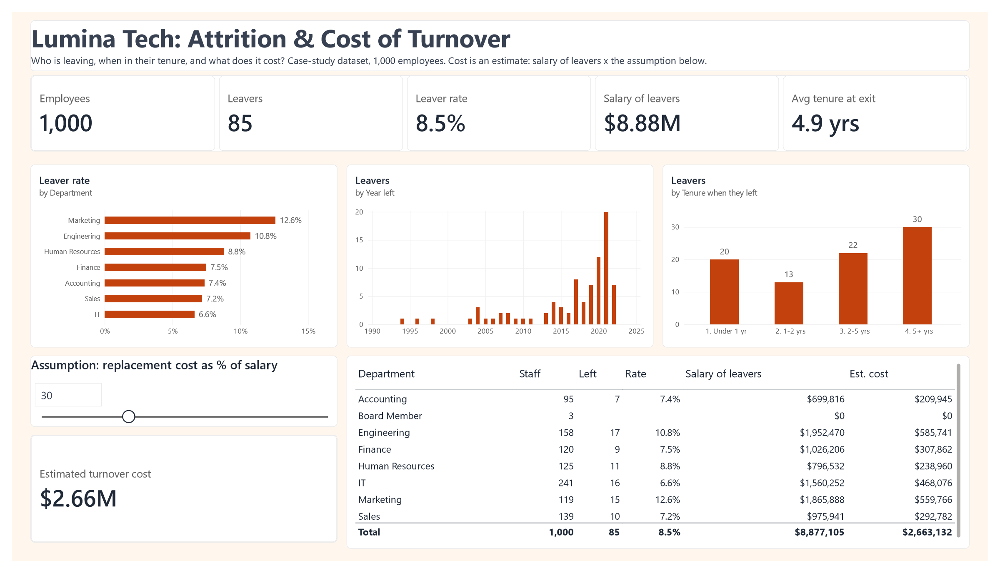

Business context
Leadership could see people leaving but had no costed figure to justify retention spending. Standard headcount reports showed who left and when. They did not show what those departures cost, or where the cost concentrated.
Data and preparation in Power Query
The source is a 1,000-row employee sheet with job title, department, business unit, salary, hire date, exit date and location. 85 rows have an exit date.
Steps applied
- Removed personal fields not needed for the question: full name, ethnicity, latitude and longitude. A cost-of-turnover view needs no names, and dropping them keeps the model lean and privacy-safe.
- Set explicit types for every column, including true date types for hire and exit dates.
- Added a leaver flag: 1 if an exit date exists, otherwise 0.
- Added exit year from the exit date for the trend chart.
- Calculated tenure at exit as the days between hire and exit divided by 365.25, so leap years do not distort it.
- Grouped tenure into bands: under 1 year, 1 to 2, 2 to 5, and 5 or more. Each band starts with a number so it sorts in the right order.
Tenure band column (Power Query M)
Table.AddColumn(Tenure, "Tenure Band", each
let t = [#"Tenure at Exit (yrs)"] in
if t = null then null
else if t < 1 then "1. Under 1 yr"
else if t < 2 then "2. 1-2 yrs"
else if t < 5 then "3. 2-5 yrs"
else "4. 5+ yrs",
type text)Current employees have no tenure at exit and fall into no band, so the chart counts only leavers.
DAX measures explained
Employees Count
Employees Count = COUNTROWS(Employees)One row per employee, so counting rows gives headcount in any filter context.
Leavers
Leavers = CALCULATE(COUNTROWS(Employees), Employees[Is Leaver] = 1)An early version summed the leaver flag and added zero. That returned 0 for current staff and created an empty "(Blank)" bar in the tenure chart. Counting filtered rows returns blank for groups with no leavers, which keeps the charts clean.
Leaver Rate
Leaver Rate = DIVIDE([Leavers], [Employees Count])DIVIDE protects against a zero denominator. Formatted to one decimal place.
Salary of Leavers
Salary of Leavers =
CALCULATE(SUM(Employees[Annual Salary]), Employees[Is Leaver] = 1) + 0The annual salary attached to the roles that were vacated. It is the base the cost estimate is built on.
Avg Tenure at Exit
Avg Tenure at Exit = AVERAGE(Employees[Tenure at Exit (yrs)])Averages only leavers, because current employees have a blank tenure at exit. Formatted as years to one decimal place.
The cost assumption slider
Turnover cost is not recorded in any HR system. It has to be estimated, and the estimate depends on an assumption. Rather than hide that assumption, the dashboard puts it on a slider.
Est Turnover Cost
Est Turnover Cost =
[Salary of Leavers] * 'Replacement Cost Pct'[Replacement Cost Pct Value] / 100The parameter Replacement Cost Pct runs from 0% to 100% of salary in steps of 10, with a default of 30%. The department table recalculates as the slider moves.
Why 30%
Published estimates of the full cost of replacing an employee vary widely, from under a third of annual salary for junior roles to more than a full year's salary for specialist and senior roles. 30% sits at the conservative end of that range, so the headline figure is unlikely to overstate the problem.
- What 30% coversRecruitment, onboarding and the productivity lost while a new hire gets up to speed, as a single rate.
- Same rate for every roleA senior engineer and a junior analyst are costed at the same share of salary, which understates specialist exits.
- Linear scalingDoubling the rate doubles the cost. At 50% the estimate is about $4.44M.
- Agree it firstThe rate should be agreed with Finance before the figure goes into a business case.
Dashboard and findings

| Department | Staff | Left | Rate | Salary of leavers | Est. cost at 30% |
|---|---|---|---|---|---|
| Marketing | 119 | 15 | 12.6% | $1,865,888 | $559,766 |
| Engineering | 158 | 17 | 10.8% | $1,952,470 | $585,741 |
| Human Resources | 125 | 11 | 8.8% | $796,532 | $238,960 |
| Finance | 120 | 9 | 7.5% | $1,026,206 | $307,862 |
| Accounting | 95 | 7 | 7.4% | $699,816 | $209,945 |
| Sales | 139 | 10 | 7.2% | $975,941 | $292,782 |
| IT | 241 | 16 | 6.6% | $1,560,252 | $468,076 |
| Board Member | 3 | 0 | 0.0% | $0 | $0 |
| Total | 1,000 | 85 | 8.5% | $8,877,105 | $2,663,132 |
Marketing and Engineering hold just over a quarter of the workforce but account for 38% of leavers and 43% of the estimated cost.
- Tenure pattern: 20 leavers went in their first year, 13 between one and two years, 22 between two and five, and 30 after five or more. Average tenure at exit was 4.9 years.
- Trend: exits were occasional before 2013, then rose sharply from 2017 and peaked at 20 in 2021.
- IT is the largest department but has the lowest leaver rate, 6.6%.
Limitations
- Not an annual rate. Exit dates span 1994 to 2022, so the 8.5% leaver rate is cumulative across the whole period. It should not be compared with a yearly attrition benchmark.
- No reason for leaving. The data does not record voluntary versus involuntary exits, so regretted attrition cannot be separated out.
- Cost is an estimate. It rests on the assumption in section 04 and should be read as a range, not a fact.
- Case-study data. Figures describe a fictional company and are not results from an employer.
Recommendations
- Prioritise Marketing and Engineering. Run exit and stay interviews in both to find the causes before committing budget.
- Strengthen the first year. Structured 30, 60 and 90-day check-ins would target the 20 people who left before their first anniversary.
- Review progression for long-serving staff. 30 leavers had five or more years' service, which points to limited routes upward.
- Agree the cost rate with Finance, then use the slider to present a low, central and high estimate rather than a single figure.
- Record exit reasons so future reporting can separate regretted from non-regretted attrition and track it by year.
How to reproduce it
Download the Power BI file (Lumina_Attrition_Cost.pbix). It opens in Power BI Desktop with the data model and every measure described here.
- Load the employee sheet and apply the Power Query steps in section 02. Name the query
Employees. - Set
Exit Yearto "Don't summarize" so it works as a chart axis. - Create the measures in section 03 and the parameter in section 04: 0 to 100, increment 10, default 30.
- Sort the tenure chart by
Tenure Bandascending so the bands read in order.